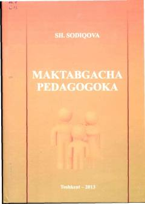

MPMaktabgacha ta'lim yo'nalishi talabalari uchun mo'ljallangan nazariy va amaliy darslik.
Ushbu darslik maktabgacha ta'lim yo'nalishidagi talabalar uchun mo'ljallangan bo'lib, maktabgacha yoshdagi bolalarni tarbiyalashning nazariy va amaliy asoslarini qamrab oladi. Kitobda ta'lim-tarbiya jarayonini tashkil etish, maktabgacha ta'lim muassasasi menejmenti hamda oila va bog'cha hamkorligi masalalari batafsil yoritilgan.